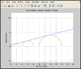
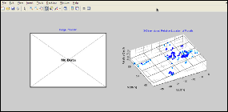
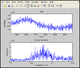

MATLAB Functions
Various MATLAB functions available for public use
- Before using...
- Mohr-Coulomb Failure Envelope Solver
- Boneplot: Bone Orientation Analysis
- Plot SAC Data for Analysis
- Bonus Functions
Before using...
These are functions that I have either written, composed or altered in MATLAB. Some use other functions or pieces of other functions that others have written. Proper credit should be given in the M-file itself if this is the case. I make no promises toward the usability, efficiency, or accuracy of any of the following functions. Many still have obsolete comments and code in them and will require modification to meet your specific needs. They are all free to use and alter as long as attribution is properly given in the altered function. If there are questions or comments please email me at the address found on the main page of this site.
Mohr-Coulomb Failure Envelope Solver
There are three functions available for the Mohr-Coulomb failure envelope solver. The first function coulomb_approx() solves for the failure envelope for only two stress samples (two Mohr circles) and can act as a standalone function. The second function coulomb_series() will solve for a series of stress samples and relies on the coulomb_approx_values() function.
{kind=link}

The principle used behind the coulomb failure envelope solvers is that when an angle drawn from the centroid
of each of two Mohr's circles is drawn with an identical value the y-intercept will be at it's peak where
the most optimal angle is found. This can be illustrated by viewing the relationship of the derivative of the
y-intercept with respect to theta. Using this knowledge it is possible to iteratively converge upon the most
optimal y-intercept and slope value which then becomes the linear Mohr-Coulomb failure envelope. For datasets
where there are more than two stress samples every combination of each two Mohr's circles can be solved for
and the resulting averaged y-intercept and slope value can be used to find the best fit failure envelope.
For more information on the Mohr-Coulomb failure envelope see my paper or poster available on the
home page.
Download coulomb_functions.zip (M-files)
Boneplot: Bone Orientation Analysis
{kind=link}

The boneplot() function provides a method to analyze the in situ orientation of bones, bone fragments and other fossilized fragments. It accepts E-N and Z data (x,y,z) along with the path to an image preview of the specimen. After plotting all of the relative locations the function performs a 3-dimensional regression using the fit_3d_data() function which I did not write. The regression works by minimizing orthogonal distances to either a plane or a line. The two methods differ slightly and will give minimally different answers for large datasets. I recommend running both and taking an average.
Included in the download is the boneplot() function, 5 images used for demonstration
purposes, and various datasets to use as examples or for testing purposes. There is also a compiled executable
that will run on 32-bit Windows installations available. The MATLAB Component Runtime (v7.8) is required to
run the executable. Datasets and images from the archive containing the M-files will be necessary in most situations.
Other compiled versions can be made available for Linux or Windows upon request and a statement
of intent that outlines what the program is intended to be used for.
Download boneplot.zip (M-files, images, datasets)
Download boneplot_win32.zip (x86 executable)
Plot SAC Data for Analysis
{kind=link}

This function is simple but useful. There are two versions of it included. The display_sac() function will display
a set of E-N and Z data at once and lock the zoom so inspection of the data becomes easier. The display_sac_single()
function only analyzes one dimension of data but also performs a Fourier decomposition for further signal analysis.
Writing your own variations on these functions should be easy. In the future a quick-stitcher is intended to allow
for the concatenation of multiple consecutive datasets. Other future implementations may have more advanced
digital signal processing options such as the ability to perform a bandpass time series. Eventually, this work is
expected to provide the basis for choosing a site to place a seismometer in the Northern Kentucky area.
Download plotsac.zip (M-files)
Bonus Functions
Below are other functions that either complement those above or are deemed not important enough to receive their own section. Some I did not write and are referenced since they are used by the functions above.
fit_3D_data() is used by boneplot to perform 3-dimensional regressions. I modified this function slightly. For the original, look here.
coulomb() was the original coulomb failure envelope solver I wrote that explicitly solves for the failure envelope using differential calculus rather than iterative approximation. Very buggy and slow.
intersections() is a function I did not write that can be used by the coulomb() function above. You can also use the solve() function in the symbolic math toolbox so this function is not required.